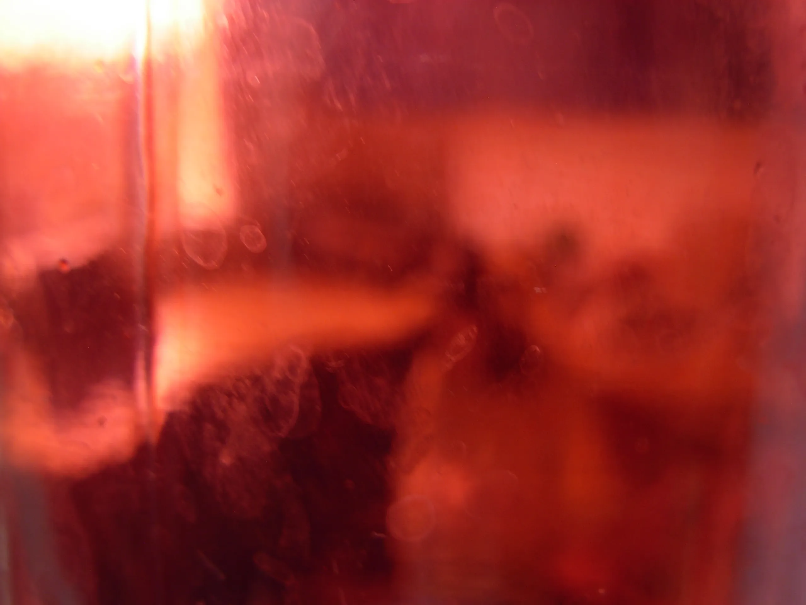
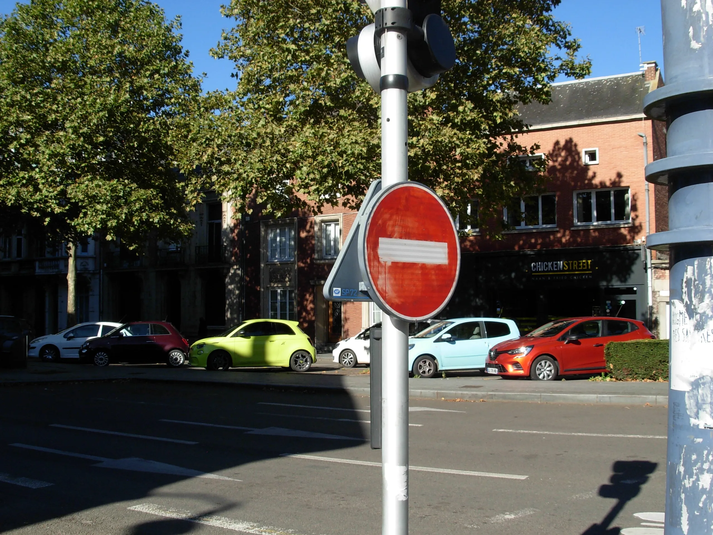

Cliché
photographies faites avec un ancien appareil numérique
sélection de photographies, servant de preuves de mes petits voyages, j'aime rendre à ses souvenirs un côté énigmatique où l'on retrace l'histoire derrière.



